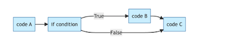
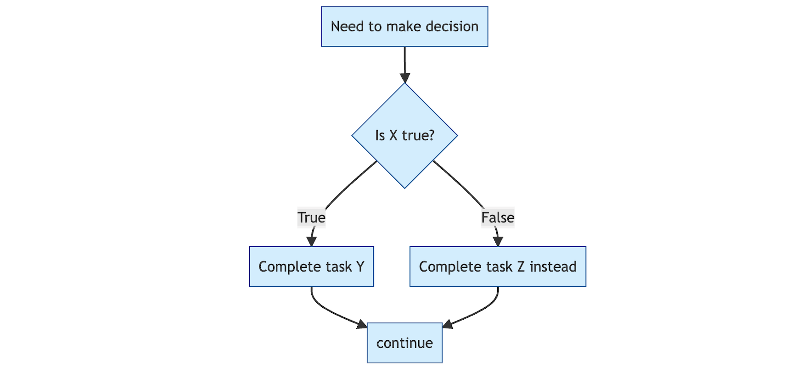
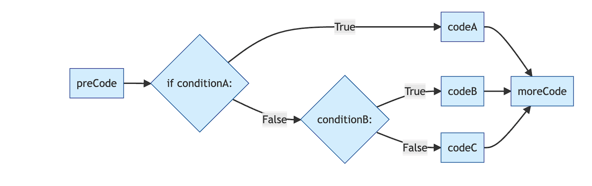
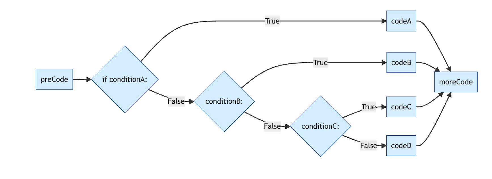
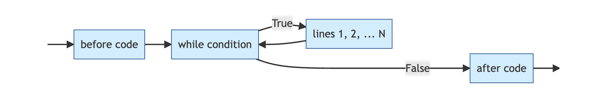

Intro to Python Day 2: Flow Control and New Data Types
Reminders
Office hours from 10-12, or by appointment
- I know that many of you are in the Math Lecture (and likely also the LaTex lecture). If you want to meet via zoom at some other time, email me.
Optional readings are posted on the syllabus
Practice is key!
Course Outline
Yesterday: Intro and Coding Basics
Today: Basics Continued and Control Flow
Wednesday: Object Oriented Programming and Functions
Thursday: Data Analysis and APIs
Friday: Web Scraping and Text-as-Data
Three Ways, Same Result
Yesterday’s exercise only accepted Friday. What if we also want to accept friday? There are several reasonable ways to do this.
All three work. Option 2 scales best — it also handles FRIDAY, fRiDaY, etc. Option 3 reads cleanly when you have a small set of valid inputs.
Boolean Review
Write a script that prints Hi <your name> if name == "<your name>".
Test it by assigning your actual name to name, then changing it to something else.
Logical Operators on Booleans
not, or, and are logical operators
- Note:
|and&work elementwise on NumPy and pandas arrays — don’t use them for simple boolean logic. Stick withorandand.
- Note:
not a is true if a is False, False if a is True
a or b is true if at least one of a or b is true
a and b is true only if both a and b are true
Logical Operator Example
Control Flow
If is used to evaluate an expression if a condition is true
If statements are always <condition>:
Don’t forget the colon.
Indentation can be any consistent amount of spaces, but 4 is the convention.
Everything within the indentation is evaluated conditionally. Once you remove indentation, everything is evaluated.
Graphical if control flow

Note that if the condition is not met, the code just ignores the if statement and continues on.
Budgeting Example
The script compares earned to spent, and if we earned more than we spent, it congratulates us.
Try a poli sci version: write a script that prints A wins! if candidate A got more votes than candidate B.
Multiple Conditionals
One way to add some complexity is to have sequential if statements. For example, imagine we wanted different responses if the user had a surplus, a deficit, or was breaking even.
How could we write such a script using three sequential if statements?
Branching
An if statement is performed when a condition is true. What if we also want to specify what happens if the condition is false?
else statements are used with if statements, such that the if statement is only executed if the condition is true, and the else statement is only executed if the condition is false.
What are some potential examples of when we could use an else statement?
Else Statements Graphically

How is this different than the logic of a simple if statement?
Else Statement Code Example
Imagine we wanted to write code to determine whether someone is eligible to vote, based on their age.
We could use two if statements, but more commonly we will use an if statement followed by an else statement. What would that look like?
Nesting Statements
We can “nest” conditional statements inside of other conditionals, using the following format
Imagine now that voting requires both being old enough and being registered. We can nest a second if statement, evaluated only when the first one is true, to handle this. What would the code look like?
Elif Statements
If/else statements cover the set of cases where you have code you want to execute if condition a is true, and other code to execute if condition a is false. What if you have a more complex situation based on multiple conditions?
Imagine a polling place reviews voter check-ins. If the voter is registered at this precinct, allow them to vote. Else if they are at the wrong precinct, redirect them. Otherwise, offer a provisional ballot.
Elif Graphical Intuition

Now we can have fairly complicated conditions, each with their own code to execute.
You Try
Write a script that tells a student what course in a methods sequence they should register for. Ask them for an input which represents their current knowledge level.
If the student has no prior knowledge, they should take “Quant 1”. If they have a little prior knowledge, they should take “Quant 2”. If they are already advanced, they should sign up for “Quant 3”.
We can keep making things more complicated!

A More Complicated Problem
Let’s ask users what the weather is like, and give feedback based on the answer.
If the weather is rainy, tell the user to grab an umbrella. If it’s sunny, tell them to grab some shades. Otherwise, if it’s cloudy, ask them if the weather is cold or not. If it’s cold, tell them to put a coat on, if it’s not, tell them a long sleeve shirt should be fine.
Finally, if they give some other answer, tell them to just wear something comfy.
Break
Parsing Nested Statements
How do we know when code will be evaluated?
How do we know which else belongs to which if?
Indentation!
Loops
What if you want to repeat a task many times? There are often many ways to do this.
- In
Ryou have theapplyfunctions, or you canmapif you are a tidyverse user
- In
In
pythonthere are also plenty of different ways, but loops are a very common approachThere are two types of common loops you will see, for loops and while loops
Loops: While
Keeps running while a condition is true.
The loop will keep running until the condition is no longer true, then exit.
Warning: It’s possible to write infinite loops that never exit, often by accident. We want to avoid this by paying close attention to our condition.
While Loop Example
Common Syntax for While Loops
Graphical While Loops

You Try
Write a script to find the smallest number greater than 700 that is divisible by 13, using a while loop.
Hint - The standard set up for a while loop will work well here, you just need to think about what the right starting index is. Also, recall the modulo operator %!
A Solution
number = 701 # start at the first number greater than 700
while number % 13 != 0:
print(f"{number} is not divisible by 13.") ## remember those f strings from earlier!
number += 1
print(f"{number} the smallest number greater than 700 and divisible by 13")701 is not divisible by 13.
702 the smallest number greater than 700 and divisible by 13Nested While Loop
# A list of names
names = ["Alice", "Bob", "Charlie"]
# A list of languages to greet in
languages = ["English", "Spanish", "French"]
# Outer loop: step through each person
i = 0
while i < len(names):
name = names[i]
# Inner loop: for the current person, greet in each language
j = 0
while j < len(languages):
lang = languages[j]
if lang == "English":
greeting = "Hello"
elif lang == "Spanish":
greeting = "¡Hola"
elif lang == "French":
greeting = "Bonjour"
else:
greeting = "Hi"
print(f"{greeting}, {name}!")
j += 1
# Move to the next person
i += 1Graphical Nested While Loops

Another One
What will this code do?
You Try
Create the following object
Write a nested while loop that prints each 10 character sequence in the sentence, so that the output looks like
There once
here once
ere once l
and so on
Hint: Write the inner loop (i.e., the basic loop to print the first 10 characters) first, then nest it.
For Loops
With for loops, you explicitly define the range over which the loop will execute.
Similar to while loops, but when you know the number of iterations, the syntax is cleaner. Each iteration, the running variable updates its value (it iterates over the iterable object) — no manual index updates needed.
Notes on Range()
By default, start = 0 and step = 1
Only stop is required, start and step are optional
Will loop from start until stop - 1
Examples
How will these evaluate?
A more complex for loop
What will this code do?
You Try
Write a for loop that loops over all the characters in “Michigan” and outputs each character individually followed by a !.
Break Statements
Sometimes, you might want the loop to stop early if some predefined conditions are met
Break statements do exactly this, exiting the loop and stopping evaluation
You Try
Write a for loop that runs 4 times. On each iteration, prompt the user for a word, then print the first and last letter of that word.
Let’s take a Break
Lists
Lists are one of the four basic data types in which to store values in Python
The others are tuples, dictionaries and sets.
NumPy, Pandas, etc will add more types (like how the tidyverse adds
tibblein R)- Arrays and DataFrames will be familiar to R users (or spreadsheet users)
Used to store multiple items in a single variable
More on lists
Items in a list don’t all need to be of the same type
Ordering
Lists are ordered, which means you can access an item with its index
Warning
Remember, python indexes start at 0, not 1!
Lists can have duplicates
An item can occur more than once in a list
sets can only contain each object a single time
Lists are mutable
Lists are mutable objects
This means that they can be modified in place
Length Function
Sometimes, it’s useful to know the length of a list. The length of a list is the number of elements in the list, rather than say the total number of characters in the list. The len() function will find the length for us.
Methods
len()was a function that we called on a list.methodsare functions that belong to a specific object- only work with that object
syntax: object.method()
For R users, this is a big difference
Extra confusing because
function(object)is also still valid python syntax!
List methods
append
insert
reverse
sort
index
extend
etc, etc
append()
append() adds an item to the end of a list
['Red Sox', 'Braves', 'Cubs', 'Giants']Note that we don’t have to do any reassignment or use any indexing. The list is modified by append() and updated in memory
Insert()
insert() adds an element at a specified position. The syntax is
Use the insert() method to insert the “Phillies” into this list, with index = 1.
Sort
sort() will order your list. The default is to sort in ascending order
But we can also sort in descending order by using reverse
Sorted()
To see the difference between using a function and a method, consider the function sorted
sorted(object) returns a sorted version of the list, without updating the original
Index
Index returns the index of the first element with the specified value
extend()
extend() adds the elements of a new list (or other iterable) to an existing list
Remove and Pop
Remove removes a named element
pop removes by index and returns the element that has been deleted
If you don’t give an index, pop removes the last element in the list
Indexing and Slicing
We can slice lists using the [start:stop:step] syntax that we saw with range earlier
start at start (default 0)
stop one step before stop (default is len(list))
step specifies how many indices to jump
Watch Out: Exclusive Endpoints
The stop index is not included in the slice. [a:b] gives you b - a items.
Your Turn
Create a list of at least 4 objects of your choice.
Add an object as the third item of your list
Create a second list of at least two objects and add it to the first.
Remove the second item on your list.
Sort your list alphabetically.
Using slicing, only keep the last three items in your list
Combining Lists and Loops
Consider the following list:
How could we write a for loop to return all of the fruits in the list? What about a while loop?
Combining Lists, Loops and Conditionals
Suppose we wanted to designate some fruits as short-name fruits and some fruits as long-name fruits, based on how many letters they have. Write a loop that assigns fruits with less than six letters to a list called short_fruit and fruits with six or more letters to a list called long_fruit. Check that the loop does what you expect by printing each list.
String Methods
startswith()
endswith()
capitalize() uppercases the first character and lowercases the rest
title() capitalizes the first character of every word
upper() capitalizes everything
lower() converts everything to lower case
Tuples
Tuples are also ordered sequences of items
Unlike lists, they are immutable (cannot be changed on the fly)
Created with parentheses ()
tpl = ("a", True, 5, "Red Sox")
print(tpl)
tpl[3] = "Blue" ## Note that this causes an error message, because the tuple is immutable('a', True, 5, 'Red Sox')--------------------------------------------------------------------------- TypeError Traceback (most recent call last) Cell In[30], line 4 1 tpl = ("a", True, 5, "Red Sox") 2 print(tpl) ----> 4 tpl[3] = "Blue" ## Note that this causes an error message, because the tuple is immutable TypeError: 'tuple' object does not support item assignment
Why Tuples?
Aren’t these just slightly less useful lists?
Sometimes, immutability is an advantage. More stable, safer if you know you want the values to stay constant
- More computationally efficient
Useful for use as keys in a dictionary (more soon)
Methods for Tuples
Since tuples are immutable, they only have two methods
count()
index()
Sets
Sets are unordered collections of items
Sets store unique elements, with no duplicates
Uses hashing for efficient storage/retrieval
- computationally efficient, great for quick look-up
Using Sets for Quick Lookup
Create a set of voters who have already cast a ballot
Check to see if Will is among them
Sets v Lists
Sets:
- Use hashing — go directly to where the item should be stored, regardless of set size
Lists:
- Scan elements one by one — slow for big lists
Sets are more computationally efficient; lists are more flexible
Set Operations
.add() adds an element to a set
.union() will return the union of two sets
.update() will return the union and update the original
.difference() will return the difference between two sets
.difference_update() will modify the original set
You Try
Create a list of newspaper titles
Iterate over the list to make all of the titles lowercase
Create a second list of TV News networks
Add the elements of the new list to the old list
An Answer
See You Tomorrow!
Tomorrow — Functions, Modules, and NumPy
Questions: come to office hours (10 AM – 12 PM daily), or email me
Recommended reading: OpenStax Introduction to Python Programming, Ch. 4–5, 9–10
Slides will be posted after class on Canvas and at will-horne.github.io/icpsr-2026